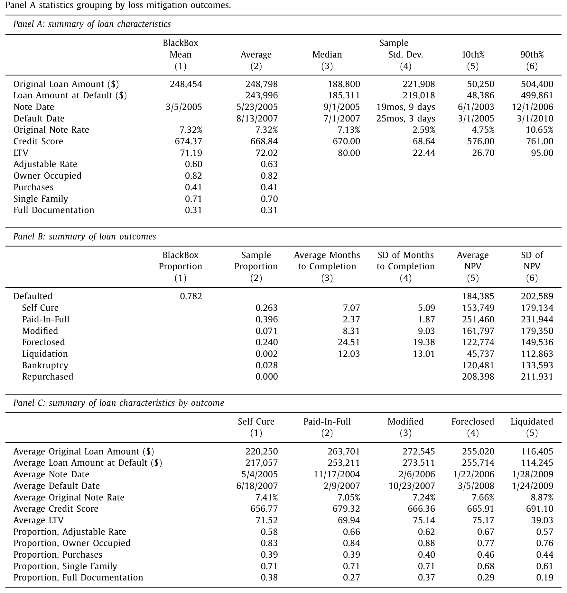
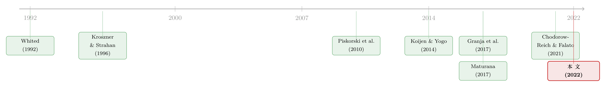

替你垫付月供的那个人，最怕你拖太久
本文读的是 Aiello (2022, Journal of Financial Economics)：在房贷证券化的链条里，有一类被长期忽视的中间人——按揭服务商（mortgage servicer）。借款人断供时，是它先掏出自己的钱替你把月供垫给投资者。正因为「垫款」这件事压在它自己的资产负债表上，一旦服务商自己缺钱，它就会抢着把违约贷款推向止赎或修改——不是因为这对投资者最优，而是因为只有这样它才能把垫出去的钱拿回来。作者用工具变量估计：平均每一笔违约贷款，服务商的金融约束要为危机期间 $58,866 投资者损失中的 $11,896（20.21%）负责。
1 一个被忽略的中间人
2007–2009 的金融危机，讲过太多遍了。我们熟悉的版本里，主角是借款人、是发起贷款的银行、是买下按揭支持证券（mortgage-backed securities, MBS）的投资者。可有一个角色，几乎从未被人正眼看过：当你某个月没还上房贷时，到底是谁先替你把那笔本金和利息（principal and interest, P&I）垫给了远在天边的 MBS 投资者？
答案是按揭服务商。它不是放贷的人，也不是持有贷款的人。它持有的是另一项被剥离出来的资产——按揭服务权（mortgage servicing right）。它的活儿，是把借款人零散的现金流「打理」成一笔笔整齐划一、按月到账的证券现金流。听上去像个收发室。但这篇论文要告诉你的是：这个收发室，在危机里亲手毁掉了大量投资者价值。
为什么？因为有一条制度性的规定：在非机构证券化（non-agency securitization）里，借款人一旦断供，服务商必须用自己的钱，先把月供垫付给投资者。这笔垫款（advance）会在服务商的资产负债表上记成一笔应收款。借款人哪天补上了，应收款一笔勾销；可只要借款人还在拖，这笔钱就一直压在服务商自己的账上。
于是问题来了：垫款这件事，本意是给投资者一层缓冲——让暂时困难的借款人有机会自己缓过来，而不必立刻被赶出家门。可这同一笔垫款，也把服务商自己的钱包绑进了局里。这正是本文的核心张力所在：当服务商自己也缺钱时，它还愿不愿意继续替你垫下去？
2 垫款如何反噬：服务商的小算盘
先把服务商的激励算清楚，故事的反转才看得明白。
服务商在一笔违约贷款上能做两件大事：修改（modification）贷款条款，或者止赎（foreclosure）收房。关键在于回收机制——论文里写得清清楚楚：
一旦完成贷款修改协议、或者卖掉止赎的房子，服务商对该笔贷款的现金流享有第一顺位求偿权，可以把之前垫出去的钱全额收回，而且不管这笔贷款最终的处置价款好坏、表现好坏。要是这笔贷款的现金流不够补，服务商还能从这个证券化池子里任何其他贷款的现金流里优先扣回。
换句话说：服务商最终一定能把垫款拿回来——问题只在「多快」。一个还在拖的违约贷款，意味着服务商得继续往里垫钱、继续占用自己的资金。而一旦把它「了结」（修改签字或止赎成交），垫款立刻回笼，未来也不必再垫。
这就解释了一个反直觉的事实：在文献里，大家几乎默认「修改总比止赎好、止赎是迫不得已」。但本文（以及 Maturana (2017)）指出，对一个缺钱的服务商而言，修改其实是更快的回血通道。数据摆在那里：从首次违约算起，一笔贷款平均要 8.31 个月走到修改完成，而止赎清算（foreclosure liquidation）平均要 24.51 个月——493 天的差距，意味着修改让服务商回收垫款的速度，是止赎的 2.95 倍。

Table 1
所以一个缺钱的服务商，既会比最优水平更激进地止赎，也会更积极地推修改——两条路都通向「赶紧把垫款拿回来」。这一点很要紧，因为它把一个朴素的直觉打翻了：缺钱不等于「一律收房」，而是「一律了结」。
3 数据：被遗忘的那 90%
要看清这件事，得有一份足够细的数据。作者用的是 BlackBox，它覆盖了危机前私人证券化（非机构）住房按揭贷款的约 90%——这正是危机里绝大多数违约、修改、止赎真正发生的地方。机构证券化（Fannie/Freddie）和银行自持组合里，垫款负担要么不存在、要么被大大减轻，所以反而不是检验「服务商金融约束」的合适场景（这一点 Chomsisengphet & Lu (2015) 也提到过）。
原始数据有 351 百万条月度贷款观测，折叠到贷款层面后，留下 6,940,990 笔在 2013 年或之前至少违约过一次（曾逾期 30 天以上）的唯一贷款。作者刻意只盯住第一段违约的处置结果，为的是干净——避免被服务商之前的干预「污染」了样本。
每一段违约，最终会以两类方式收场：借款人驱动的（自愈 self cure、全额还清 paid-in-full、破产），或服务商驱动的（修改、止赎、清算）。样本里，自愈占 26.3%、全额还清 39.6%、止赎 24.0%、修改 7.1%。这些比例本身就藏着张力：超过六成的违约，其实是借款人靠自己缓过来或了断的。那么问题就尖锐了——服务商那些「主动出手」的干预，到底有多少是本不必要的？
4 识别策略：把「缺钱」从「贷款本身」里剥出来
这是全篇最关键、也最漂亮的一步。
作者用来衡量服务商「缺钱程度」的代理变量，就是垫款本身。先在贷款层面算出每月的未清垫款，加总到服务商层面，得到第 t 月、服务商 s 的未清垫款总额 \(Advances_{t,s}\)，再除以该服务商的组合未清实际余额，得到垫款占比：
$$ AdvFrac_{t,s} = \frac{Advances_{t,s}}{PortfolioBalance_{t,s}} $$
而真正的核心变量——「服务商金融约束程度」（1-Year Change in Advances as a Percentage of Loan Portfolio Balance）——是它在贷款违约前一个月与一年前两个时点上的水平差，再做标准化：
$$ \Delta AdvFrac_{t,s} = AdvFrac_{t-1,s} - AdvFrac_{t-12,s} $$
直觉是：过去一年里垫款占比急剧上升的服务商，钱包被绷得最紧。
但这里有个绕不过去的内生性问题：垫款水平本身就是服务商行为的结果。一个偏好止赎的服务商，垫款自然回收得快、占比就低——你根本分不清是「缺钱→激进」还是「激进→缺钱」。直接回归，等于把因果搅成一锅粥。
这正是「金融约束」类实证最容易翻车的地方：约束程度与决策互为因果。本文的解法，是借了 Granja et al. (2017)「卖失败银行」里那套异地房价冲击的工具变量思路。
工具变量是这样构造的：取服务商整个服务组合里各 zip 区房价回报的、按组合余额加权的平均值，但剔除焦点贷款所在的核心统计区（CBSA）。
逻辑是一条双向的链条：
- 相关性（relevance）：服务商组合里其他地区的房价表现，直接影响它整体要垫多少钱——别处房价跌，别处的违约和损失就多，服务商的垫款负担就重，钱包就紧。
- 排他性（exclusion restriction）：但别处的房价，不应该通过任何别的渠道影响这一笔贷款的处置决定，除非是经由「服务商整体缺钱」这一条。一个加州贷款会不会被止赎，本不该取决于这家服务商在佛罗里达的组合表现——除非佛州拖垮了它的资产负债表。
为了堵住排他性的漏洞，作者层层设防：把焦点贷款所在 zip 的房价回报作为控制变量直接放进去；再加上服务商固定效应，以及违约年份 × zip 区 × 借款人信用等级（Prime / Alt-A / Subprime）三重交互的固定效应。这意味着，最终的比较是在同一个 zip、同一个日历年、同一信用等级的违约贷款之间进行的——剩下的差异，就只来自服务商缺钱的程度。论文还专门用一节去回应「借款人不可观测质量、服务商的动态学习、运营产能约束、服务商自持 MBS 分层」这些具体担忧。
（关于「房价/抵押品的不确定性如何独立地拧动按揭信贷」，可对照参见《房子越「难定价」，越借不到钱》。）
5 主要结果：缺钱的手，更狠也更急
把内生性处理干净之后，结论相当锋利。
第一，缺钱让服务商既更爱止赎、也更爱修改。 金融约束每上升一个标准差，服务商在借款人首次违约后选择止赎的概率上升 9 个百分点；选择修改的概率上升 5 个百分点。两个方向同时为正——正好印证了第 2 节的算盘：缺钱要的不是「收房」，而是「了结」。
第二，这些干预多半是「本不必要」的。 作者利用金融约束的准随机分配证明：如果没有服务商缺钱这一层影响，这些被止赎、被修改的借款人，本来会自愈、再融资或卖房自己解决问题。也就是说，缺钱的服务商把一批本能软着陆的借款人，硬推下了悬崖。
第三，代价能算成钱。 作者构造了投资者贷款现金流的净现值（net present value, NPV）。从 Table 1 的 Panel B 已能读出端倪：修改后的平均投资者 NPV 为 $161,797，止赎为 $122,774，而自愈是 $153,749、全额还清高达 $251,460——把一个本会自愈的借款人推去止赎，投资者价值的落差触目惊心。汇总起来：平均每笔违约贷款，服务商的金融约束造成了 $11,896 的投资者价值损失，占该笔贷款危机期间全部 $58,866 投资者损失的 20.21%。 五分之一,出自一个此前无人记账的摩擦。
第四，也是把整个故事钉死的一步——金融约束只在「代理冲突」高的地方才咬人。 作者利用投资者监督服务商的成本高低做切割：对于低监督成本（低代理摩擦）的贷款（该不该干预一目了然），缺钱与不缺钱的服务商没有差别;只有当「到底该不该出手」本身模糊不清、投资者必须花成本去盯着服务商时，缺钱才会让服务商的行为发生扭曲。这恰好对上了引言里那句话：正是代理摩擦最高的时候，服务商的钱包才最要命。
最后，作者还检验了金融约束与产能约束（capacity constraint，如人手不足）的交互：一个产能受限的服务商，即便金融约束被外生地放松，它也没能力相应地加快修改和止赎——手伸不出去。这条结论在政策上很扎眼:2009 年美联储出手缓解服务商约束，确实能减少止赎，却不会增加修改;它带来的是更好的东西——让借款人靠自己缓过来或还清的机会。
6 文献脉络
把这篇论文放回它的来路，能更清楚它补上的是哪一格。
最上游，是「金融约束如何催生短视」的理论：Whited (1992) 用面板数据证明了债务与流动性约束对企业投资的扭曲，Eisfeldt & Rampini (2007) 则给出了约束驱动下「买新还是买旧」的取舍模型——作者说，这两者恰是本文里服务商行为的准确写照。
接着，一个自然的问题是：金融中介自己被约束时会怎样？早期证据集中在两类机构：储贷危机里的储贷机构（Kroszner & Strahan, 1996; Esty, 1997a,b），以及受监管融资约束的保险公司（Lee et al., 1997; Ellul et al., 2011; Koijen & Yogo, 2014; Merrill et al., 2021）。这些研究的共识是：约束往往抬高了中介的风险承担。
然后，镜头转向按揭。 证券化引入了服务商与投资者之间的代理冲突（Wong, 2018），而「该修改还是该止赎」一直是这条线的主战场（Piskorski et al., 2010; Agarwal et al., 2011; Adelino et al., 2013, 2014; Kruger, 2017）。Maturana (2017) 戳破了「修改永远优于止赎」的迷信;Agarwal et al. (2017) 指出不同质量的服务商在修改上能力各异。服务商的流动性危机也被 Kim et al. (2018) 记录过。

但真正关键的一步，是把「金融约束」和「代理成本」这两条向来分头研究的线接在一起。最接近的邻居是 Chodorow-Reich & Falato (2021)——它证明健康状况更差的商业银行更不愿对违约企业网开一面、更容易触发加速还款。本文沿着同一精神，但把场景换到按揭服务，并且第一个把「服务商金融约束」与「投资者实际承担的代理成本」直接连起来。识别上的关键道具，则借自 Granja et al. (2017) 的异地房价冲击工具变量。这，就是本文所站的位置。
7 评论与延伸（Q&A + 研究方向）
(a) 几个可能的疑问
Q：用「垫款」当金融约束的代理，会不会本末倒置——垫款多本身就是因为它选择不去止赎？
这正是作者最在意的内生性，也是工具变量的全部意义所在。直接用垫款水平回归确实分不清因果;但用异地房价回报作工具后，被提取出来的，只是「服务商组合在别处被房价拖累、因而整体缺钱」这一外生部分——它与这一笔焦点贷款该不该止赎无关。论文 4.3 节还提供了另一个度量（服务商债券的 CDS 利差）做交叉验证。
Q：排他性约束可信吗？别处的房价真的不会通过别的渠道影响本地处置？
这是要害。作者的防线有三层：把焦点 zip 的房价作控制变量、服务商固定效应、以及违约年 × zip × 信用等级的三重固定效应——比较被压到「同地、同年、同信用」的极窄范围内。论文还逐一回应了不可观测借款人质量、服务商动态学习、产能约束、服务商自持 MBS 分层等具体威胁。当然，「别处房价完全不携带本地宏观信息」终究是一个无法直接检验的假设，读者可以保留一分警惕。
Q：为什么缺钱会让服务商同时更爱止赎和修改？这听起来自相矛盾。
一点都不矛盾——只要你站在服务商而非借款人的角度。它真正想要的不是「房子」也不是「条款」，而是让垫款尽快回笼、并停止继续垫付。修改和止赎都能做到这一点，且修改回血速度还是止赎的
2.95倍。所以缺钱推动的是「了结」，止赎和修改只是了结的两种形态。
Q：20% 这个数，是不是太大了？
它指的是「每笔违约贷款、归因于服务商金融约束」的那部分投资者损失，
$11,896 / $58,866 = 20.21%。脚注还给了一个总量参照：受影响的止赎约占作者样本中约 270 万笔止赎的16%。这不是说服务商制造了全部危机损失，而是说在已经发生的损失里，有可观的一块来自一个此前没人记过账的摩擦。
Q：这跟「证券化导致止赎更多」（Piskorski et al. 2010 那条线）是一回事吗？
不是。证券化制造的是「服务商 vs 投资者」的代理冲突这个舞台;本文研究的是，在控制住证券化等所有既有因素之后，服务商自己的资产负债表如何进一步扭曲了这台戏。换句话说，前者讲为什么会有代理冲突，本文讲什么时候这个冲突会被放大——答案是：当服务商缺钱、且监督成本高的时候。
Q：政策含义到底是「救服务商」还是「不救」？
微妙之处在于：缓解服务商约束确实能减少止赎，但不会增加修改。它真正带来的，是把决定权还给借款人——让更多人靠自愈或还清自己了结。所以 2009 年美联储缓解约束的政策，方向是对的，只是它的功效不在「促成修改」，而在「不再把本能软着陆的人推下去」。
(b) 几个可能的研究问题与提案
1. 把同一逻辑搬到公司债的受托/服务环节 - 【经济故事】公司债、CLO 里同样存在「服务/受托方」对违约资产的处置裁量权，且这些中介自身的融资状况会周期性收紧。若中介缺钱会扭曲对违约债的重组 vs 清算选择，机制与本文同构。 - 【可行性】中。需要把中介层面的约束度量（如资金成本、杠杆）与单券处置结果匹配;难点是公司债违约样本远小于按揭，识别需要一个类似「异地冲击」的外生约束来源。
2. 外资持有人结构如何改变服务商/受托方的激励 - 【经济故事】当 MBS 或信用资产的投资者中外资占比更高时，监督成本（语言、时区、法律距离）更大，按本文逻辑，代理摩擦更高、服务商缺钱时的扭曲应更严重。这把「代理摩擦」这个调节变量做成了可观测的持有人结构。 - 【可行性】中偏低。需要把分层持有人的国别结构与处置结果连起来，非机构 RMBS 的投资者明细可得性有限;但在有持有人数据的信用市场（如部分公司债）或可一试。
3. 服务权转让作为「约束的退出阀」 - 【经济故事】本文指出 2011 年后服务权转让活动才变得重要（Mayock & Shi, 2018）。一个缺钱的服务商若能把服务权卖给不缺钱的接手方，扭曲是否随之消失？这把「金融约束→扭曲」做成一个可被交易缓解的摩擦。 - 【可行性】高。转让事件是清晰的时点冲击，可做事件研究 / DiD，比较转让前后同类违约贷款的处置结果与投资者 NPV。数据上需要转让记录与贷款层面处置的衔接。
4. 流动性冲击与「了结偏好」的市场层面外溢 - 【经济故事】若大量服务商在同一时间缺钱、同步加速止赎，会不会在局部住房市场制造「抛售—压价—邻里违约」的反馈（Gupta, 2019 的止赎传染）？本文是贷款层面的，留下了一个总量层面的外溢问题。 - 【可行性】中。需要把服务商约束的地理暴露聚合到 zip / CBSA 层面，识别要小心区分「服务商缺钱」与「当地基本面恶化」——本文的异地工具变量思路恰好提供了模板。
8 我的判断
这篇论文的贡献，在于给一个长期隐形的角色记了一笔账。在所有关于危机的叙事里，按揭服务商几乎是透明的——可作者证明，正是这个「收发室」，因为被制度绑上了自己的资产负债表，在危机里贡献了每笔违约贷款约五分之一的投资者损失。把「金融约束」与「代理成本」这两条素来分家的文献接起来、并且用一个干净的异地房价工具变量去做因果，是它最扎实的地方。「缺钱→既止赎又修改」这个看似矛盾、实则统一于『加速回血』的发现，尤其漂亮。
对识别，我仍保留两点警惕。其一，排他性约束终究无法直接检验——「服务商组合里别处的房价，绝不通过本地宏观信息影响本地处置」是一个强假设;虽然三重固定效应把比较压得很窄，但服务商的地理布局并非随机，组合配置本身可能与某些不可观测的服务策略相关。其二，投资者价值的 NPV 度量依赖一组贴现与现金流假设，20.21% 这个精确到小数点后两位的数字，区间恐怕比点估计宽。
后续我最想看到的，是把这套逻辑推回信用市场的中介层：在公司债、CLO 里，处置违约资产的中介同样会缺钱，同样面对监督成本不一的投资者结构。如果「缺钱的中介偏好快速了结、并把代价转嫁给投资者」是一条普遍规律，那它就不只是按揭危机的一个注脚，而是关于「金融约束如何经由中间人扭曲资产处置」的一般命题。（关于按揭链条里另一类「看不见的再分配」，可对照参见《谁在替谁还房贷？》。）
参考文献
- Aiello, D. J. (2022). Financially constrained mortgage servicers. Journal of Financial Economics 144(2), 590–610.
- Adelino, M., Gerardi, K., & Willen, P. S. (2013). Why don't lenders renegotiate more home mortgages? Redefaults, self-cures and securitization. Journal of Monetary Economics 60(7), 835–853.
- Adelino, M., Gerardi, K., & Willen, P. (2014). Identifying the effect of securitization on foreclosure and modification rates using early payment defaults. Journal of Real Estate Finance and Economics 49(3), 352–378.
- Agarwal, S., Amromin, G., Ben-David, I., Chomsisengphet, S., & Evanoff, D. D. (2011). The role of securitization in mortgage renegotiation. Journal of Financial Economics 102(3), 559–578.
- Agarwal, S., Amromin, G., Ben-David, I., Chomsisengphet, S., Piskorski, T., & Seru, A. (2017). Policy intervention in debt renegotiation: Evidence from the Home Affordable Modification Program. Journal of Political Economy 125(3), 654–712.
- Chodorow-Reich, G., & Falato, A. (2021). The loan covenant channel: How bank health transmits to the real economy. Journal of Finance (forthcoming).
- Chomsisengphet, S., & Lu, C. (2015). Servicer distress and mortgage renegotiations. Working Paper.
- Eisfeldt, A. L., & Rampini, A. A. (2007). New or used? Investment with credit constraints. Journal of Monetary Economics 54(8), 2656–2681.
- Granja, J., Matvos, G., & Seru, A. (2017). Selling failed banks. Journal of Finance 72(4), 1723–1784.
- Kim, Y. S., Laufer, S. M., Stanton, R., Wallace, N., & Pence, K. (2018). Liquidity crises in the mortgage market. Brookings Papers on Economic Activity 2018(1), 347–428.
- Koijen, R. S., & Yogo, M. (2014). The cost of financial frictions for life insurers. American Economic Review 105(1), 445–475.
- Kroszner, R. S., & Strahan, P. E. (1996). Regulatory incentives and the thrift crisis: Dividends, mutual-to-stock conversions, and financial distress. Journal of Finance 51(4), 1285–1319.
- Maturana, G. (2017). When are modifications of securitized loans beneficial to investors? Review of Financial Studies.
- Mayock, T., & Shi, L. (2018). Adverse selection in the market for mortgage servicing rights. Working Paper.
- Piskorski, T., Seru, A., & Vig, V. (2010). Securitization and distressed loan renegotiation: Evidence from the subprime mortgage crisis. Journal of Financial Economics 97(3), 369–397.
- Whited, T. M. (1992). Debt, liquidity constraints, and corporate investment: Evidence from panel data. Journal of Finance 47(4), 1425–1460.
- Wong, M. (2018). CMBS and conflicts of interest: Evidence from ownership changes for servicers. Journal of Finance 73(5), 2425–2458.